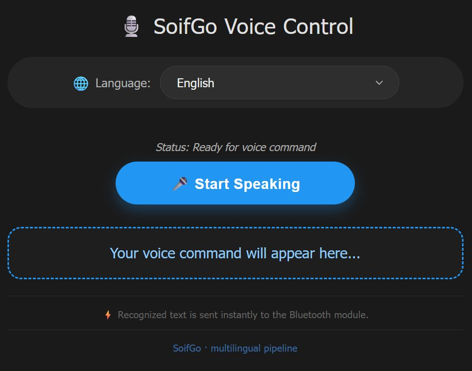

This tutorial shows how to build a multilingual voice command page inside SoifGo WebView that converts your speech to text and sends it directly to a connected Bluetooth serial device (HC-05, HC-06, ESP32…).

Language selector + Start button + live recognized text
On the first run, SoifGo must ask the user for microphone permission. Call this Sub once — the app will show a native permission dialog. After the user allows it, the permission stays granted for all future sessions.
Sub request_mic_perm(PermissionRequest1 As Object)
' SoifGo automatically shows the native microphone permission dialog.
' The user's choice is remembered by Android.
End Sub
This is the complete page. When the user taps the microphone button, the script first
calls request_mic_perm and only then starts speech recognition.
<!DOCTYPE html>
<html lang="en" dir="ltr">
<head>
<meta charset="UTF-8">
<meta name="viewport" content="width=device-width, initial-scale=1.0">
<title>SoifGo Voice · Multilingual</title>
<style>
* {
box-sizing: border-box;
}
body {
font-family: Tahoma, sans-serif;
text-align: center;
padding: 20px;
background-color: #121212;
color: white;
margin: 0;
min-height: 100vh;
display: flex;
flex-direction: column;
align-items: center;
justify-content: center;
}
.container {
max-width: 650px;
width: 100%;
background: #1a1a1a;
border-radius: 28px;
padding: 25px 20px 30px;
box-shadow: 0 12px 25px rgba(0, 0, 0, 0.7);
}
h2 {
margin-top: 0;
font-weight: 500;
letter-spacing: 0.5px;
color: #e0e0e0;
font-size: 1.8rem;
display: flex;
align-items: center;
justify-content: center;
gap: 8px;
}
.lang-selector {
margin-bottom: 25px;
text-align: left;
background: #252525;
padding: 12px 18px;
border-radius: 60px;
display: inline-flex;
align-items: center;
justify-content: center;
gap: 12px;
flex-wrap: wrap;
width: 100%;
}
.lang-selector label {
font-size: 1rem;
color: #b0b0b0;
font-weight: 400;
display: flex;
align-items: center;
gap: 6px;
}
.lang-selector label i {
font-style: normal;
font-size: 1.2rem;
}
select {
background: #2e2e2e;
color: #f0f0f0;
border: 1px solid #3e3e3e;
border-radius: 40px;
padding: 12px 22px;
font-size: 1rem;
font-family: inherit;
font-weight: 500;
cursor: pointer;
outline: none;
transition: border 0.2s, box-shadow 0.2s;
flex: 1;
min-width: 180px;
max-width: 320px;
appearance: none;
background-image: url("data:image/svg+xml;utf8,<svg xmlns='http://www.w3.org/2000/svg' width='16' height='16' viewBox='0 0 24 24' fill='none' stroke='%23aaaaaa' stroke-width='2' stroke-linecap='round' stroke-linejoin='round'><polyline points='6 9 12 15 18 9'/></svg>");
background-repeat: no-repeat;
background-position: right 18px center;
background-size: 16px;
}
select:hover, select:focus {
border-color: #2196f3;
box-shadow: 0 0 0 3px rgba(33, 150, 243, 0.2);
}
button {
padding: 16px 36px;
font-size: 1.2rem;
cursor: pointer;
background: #2196f3;
color: white;
border: none;
border-radius: 50px;
font-weight: bold;
box-shadow: 0 8px 18px rgba(33, 150, 243, 0.3);
transition: all 0.2s ease;
margin-bottom: 18px;
width: 100%;
max-width: 320px;
letter-spacing: 0.5px;
display: inline-flex;
align-items: center;
justify-content: center;
gap: 10px;
}
button.listening {
background: #dc3545;
box-shadow: 0 8px 18px rgba(220, 53, 69, 0.4);
animation: pulse 1.5s infinite;
}
button:active {
transform: scale(0.97);
}
@keyframes pulse {
0% { opacity: 1; }
50% { opacity: 0.85; }
100% { opacity: 1; }
}
#output {
margin-top: 12px;
font-size: 1.2rem;
color: #90caf9;
font-weight: 500;
padding: 18px 20px;
border: 2px dashed #2196f3;
background: #1e1e1e;
border-radius: 18px;
min-height: 70px;
word-break: break-word;
display: flex;
align-items: center;
justify-content: center;
transition: background 0.2s;
line-height: 1.5;
}
#status {
font-size: 0.9rem;
color: #aaa;
font-style: italic;
margin: 12px 0 5px;
min-height: 1.8rem;
display: flex;
align-items: center;
justify-content: center;
gap: 6px;
}
.info {
font-size: 0.78rem;
color: #666;
margin-top: 22px;
border-top: 1px solid #2c2c2c;
padding-top: 16px;
letter-spacing: 0.3px;
}
.badge {
background: #2a2a2a;
padding: 4px 10px;
border-radius: 30px;
font-size: 0.75rem;
color: #bbb;
display: inline-block;
margin-left: 6px;
}
.rtl-text {
direction: rtl;
unicode-bidi: embed;
}
.flag-icon {
font-size: 1.3rem;
line-height: 1;
filter: drop-shadow(0 2px 2px rgba(0,0,0,0.5));
}
</style>
</head>
<body>
<div class="container">
<h2>🎙️ SoifGo Voice Control</h2>
<!-- Language selection menu -->
<div class="lang-selector">
<label for="lang-select"><i>🌐</i> Language:</label>
<select id="lang-select" aria-label="Select speech recognition language">
<option value="en-US" selected>English</option>
<option value="es-ES">Español</option>
<option value="zh-CN">简体中文</option>
<option value="fr-FR">Français</option>
<option value="de-DE">Deutsch</option>
<option value="ja-JP">日本語</option>
<option value="ru-RU">Русский</option>
<option value="ar-SA">العربية</option>
<option value="fa-IR">فارسی</option>
<option value="it-IT">Italiano</option>
<option value="hi-IN">हिन्दी</option>
<option value="tr-TR">Türkçe</option>
<option value="ko-KR">한국어</option>
<option value="pt-BR">Português</option>
<option value="he-IL">עברית</option>
<option value="ku-IQ">کوردی</option>
<option value="ur-PK">اردو</option>
<option value="bn-BD">বাংলা</option>
<option value="id-ID">Bahasa Indonesia</option>
<option value="ta-IN">தமிழ்</option>
<option value="th-TH">ไทย</option>
<option value="sw-KE">Swahili</option>
</select>
</div>
<p id="status">Status: Ready for voice command</p>
<button id="start-btn">🎤 Start Speaking</button>
<div id="output">Your voice command will appear here...</div>
<p class="info">⚡ Recognized text is sent instantly to the Bluetooth module.</p>
<p class="info" style="color:#3a6ea5; margin-top:5px;">SoifGo · multilingual pipeline</p>
</div>
<script>
(function() {
const SpeechRecognition = window.SpeechRecognition || window.webkitSpeechRecognition;
// ---------- DOM elements ----------
const startBtn = document.getElementById('start-btn');
const output = document.getElementById('output');
const status = document.getElementById('status');
const langSelect = document.getElementById('lang-select');
// ---------- state ----------
let isListening = false;
let recognition = null;
// Helper: stop and restart if needed, applying new language
function applyLanguage(langCode) {
if (!recognition) return;
const wasListening = isListening;
// If currently listening, stop (we'll restart later if needed)
if (wasListening) {
recognition.stop(); // onend will handle restart if still listening
}
recognition.lang = langCode;
// Update status with selected language name (optional)
const selectedOption = langSelect.options[langSelect.selectedIndex];
const langName = selectedOption ? selectedOption.text : langCode;
if (wasListening) {
// restart after small delay (onend will trigger restart because isListening is still true)
// but ensure recognition is not in "started" state. onend will call recognition.start()
status.innerText = `Switching to ${langName}...`;
} else {
status.innerText = `Language set to ${langName} — ready`;
}
}
// Initialize recognition object if supported
if (!SpeechRecognition) {
output.innerText = "⚠️ Error: Your browser does not support speech recognition.";
startBtn.disabled = true;
startBtn.style.opacity = '0.5';
startBtn.style.cursor = 'not-allowed';
status.innerText = 'Speech recognition unavailable';
} else {
recognition = new SpeechRecognition();
// Default language (English)
recognition.lang = 'en-US';
recognition.continuous = true;
recognition.interimResults = false;
recognition.maxAlternatives = 1;
// ---------- Event handlers ----------
// Result: send to SoifGo and display
recognition.onresult = (event) => {
const currentResultIndex = event.resultIndex;
const speechToText = event.results[currentResultIndex][0].transcript;
if (speechToText.trim() !== "") {
output.innerText = speechToText;
console.log("Command processed: " + speechToText);
// Send to SoifGo pipeline
if (window.soifgo && typeof window.soifgo.CallSub === 'function') {
window.soifgo.CallSub('html_bluetooth_rx', true, speechToText);
status.innerText = "✅ Sent: " + speechToText;
} else {
// fallback if SoifGo is not available
status.innerText = "📤 (simulated) " + speechToText;
}
}
};
// Error handling
recognition.onerror = (event) => {
console.log("JS Error: " + event.error);
if (event.error === 'no-speech') {
status.innerText = "🎤 No speech detected, still waiting...";
} else if (event.error === 'network') {
status.innerText = "🌐 Network error! Please check your Wi-Fi connection.";
} else if (event.error === 'aborted') {
// ignore abort errors, usually from manual stop
} else if (event.error === 'not-allowed') {
status.innerText = "🚫 Microphone access denied. Please allow microphone.";
// we can stop listening because it's blocked
if (isListening) {
isListening = false;
startBtn.innerText = "🎤 Start Speaking";
startBtn.classList.remove('listening');
}
} else {
status.innerText = `⚠️ Error: ${event.error}`;
}
};
// When recognition ends, restart if we are still in listening mode
recognition.onend = () => {
if (isListening) {
// auto-restart to keep mic alive
try {
recognition.start();
} catch (e) {
console.warn("Restart failed, retrying in 100ms", e);
setTimeout(() => {
if (isListening) {
try { recognition.start(); } catch (err) { console.error(err); }
}
}, 100);
}
} else {
status.innerText = "Status: Stopped.";
}
};
// ---------- Start / Stop button ----------
startBtn.addEventListener('click', () => {
if (!isListening) {
// start listening
isListening = true;
startBtn.innerText = "🛑 Stop Listening";
startBtn.classList.add('listening');
status.innerText = "🎧 Listening for your command...";
output.innerText = "";
// Apply current selected language (just to be safe)
const currentLang = langSelect.value;
recognition.lang = currentLang;
try {
recognition.start();
} catch (e) {
console.error("Start error:", e);
status.innerText = "⚠️ Could not start microphone. Try again.";
// reset state
isListening = false;
startBtn.innerText = "🎤 Start Speaking";
startBtn.classList.remove('listening');
}
} else {
// stop listening
isListening = false;
startBtn.innerText = "🎤 Start Speaking";
startBtn.classList.remove('listening');
recognition.stop();
status.innerText = "Status: Stopped.";
}
});
// ---------- Language selector change ----------
langSelect.addEventListener('change', (e) => {
const newLang = e.target.value;
const selectedOption = langSelect.options[langSelect.selectedIndex];
const langName = selectedOption ? selectedOption.text : newLang;
if (recognition) {
// If listening, we need to restart with new language
if (isListening) {
// stop will trigger onend which restarts with new lang (because isListening true)
// but we must set recognition.lang BEFORE restart
recognition.stop();
recognition.lang = newLang;
// onend will auto restart using the new language
status.innerText = `🔄 Switching to ${langName}...`;
} else {
// just update language
recognition.lang = newLang;
status.innerText = `Language set to ${langName} — ready`;
}
}
});
// Additional: update status when language changes via script (not needed)
// but fine.
// Set default status
status.innerText = "Status: Ready for voice command";
}
// Make sure if SpeechRecognition is not available, we still show the select
// but no interactions with recognition.
})();
</script>
</body>
</html>
request_mic_perm is called inside the
startBtn.addEventListener('click', …) handler. If you want SoifGo to
actually show the permission dialog, you must add this single line at the beginning
of that handler:
window.soifgo.CallSub('request_mic_perm', true, null);
The current example already works, but adding this call makes the permission request
explicit and prevents the "not-allowed" error on the first run.
After speech recognition returns a transcript, JavaScript calls SoifGo's Bluetooth-send Sub with one line:
window.soifgo.CallSub('html_bluetooth_rx', true, speechToText);
The full flow is:
request_mic_perm is triggered.SpeechRecognition converts voice to text.window.soifgo.CallSub('html_bluetooth_rx', true, txt).html_bluetooth_rx() Sub.recognition.onresult = (event) => {
const speechToText = event.results[event.resultIndex][0].transcript;
if (speechToText.trim() !== "") {
output.innerText = speechToText;
window.soifgo.CallSub('html_bluetooth_rx', true, speechToText);
}
};
Sub html_bluetooth_rx(txt As String)
' Send the text to the connected Bluetooth serial device.
BluetoothSend(txt)
End Sub
If your hardware sends data back (e.g. sensor values, ACK messages), define a global
JavaScript function named html_bluetooth_tx. SoifGo calls it automatically
whenever Bluetooth data arrives:
function html_bluetooth_tx(data) {
document.getElementById('output').innerText = data;
}
window.html_bluetooth_tx = html_bluetooth_tx; // register globally
serial_voice.html.
It is already available inside the SoifGo library — no download needed.
request_mic_perm is called and Android asks for
microphone permission — tap Allow. Next times, no prompt appears.
The page includes a language selector with 22 languages. Changing the language restarts speech recognition with the new locale automatically:
English · Español · 简体中文 · Français · Deutsch · 日本語 · Русский · العربية · فارسی · Italiano · हिन्दी · Türkçe · 한국어 · Português · עברית · کوردی · اردو · বাংলা · Bahasa Indonesia · தமிழ் · ไทย · Swahili
onend, so you can speak multiple
commands without pressing the button again.serial_voice.html — feel free to copy and modify it.This simple sketch receives text over Bluetooth serial and turns the built-in LED (pin 13) on or off. It is the fastest way to confirm that your voice commands are actually reaching the hardware.
/*
* SoifGo Voice -> Serial Bluetooth -> LED
* ----------------------------------------
* Listens for the phrases "LAMP ON" and "LAMP OFF"
* and controls the built-in LED on pin 13.
*
* Wiring:
* Arduino pin 13 -> built-in LED (no external parts needed)
* HC-05 / HC-06 RX -> Arduino TX (pin 1) [via voltage divider if 5V board]
* HC-05 / HC-06 TX -> Arduino RX (pin 0)
* HC-05 VCC -> 5V, GND -> GND
*
* Baud rate: 9600 (must match the Bluetooth module and SoifGo setting)
*/
const int LED_PIN = 13; // built-in LED on most Arduino boards
String incoming = ""; // buffer for the received line
void setup() {
pinMode(LED_PIN, OUTPUT);
digitalWrite(LED_PIN, LOW); // start with LED off
Serial.begin(9600); // same baud rate as HC-05 / HC-06
Serial.println("Ready. Waiting for voice commands...");
}
void loop() {
// Read one character at a time from Bluetooth serial
while (Serial.available() > 0) {
char c = Serial.read();
// End of line? Then process the command
if (c == '\n' || c == '\r') {
if (incoming.length() > 0) {
handleCommand(incoming);
incoming = ""; // clear buffer for the next command
}
} else {
incoming += c;
}
}
}
// Process the received command (case-insensitive)
void handleCommand(String cmd) {
cmd.trim(); // remove leading/trailing spaces
cmd.toUpperCase(); // make comparison case-insensitive
Serial.print("Received: ");
Serial.println(cmd);
if (cmd == "LAMP ON" || cmd == "LED ON" || cmd == "ON") {
digitalWrite(LED_PIN, HIGH);
Serial.println("-> LED is now ON");
}
else if (cmd == "LAMP OFF" || cmd == "LED OFF" || cmd == "OFF") {
digitalWrite(LED_PIN, LOW);
Serial.println("-> LED is now OFF");
}
else {
Serial.println("-> Unknown command. Say 'LAMP ON' or 'LAMP OFF'.");
}
}
serial_voice.html page and tap the microphone."LAMP ON" with "ON" and
"LAMP OFF" with "OFF" in both the Arduino sketch
and your speech. The sketch above already accepts "ON" and
"OFF" as valid alternatives.
LED_PIN to 2 (the built-in LED on most ESP32 dev boards)
or to LED_BUILTIN. The rest of the sketch works unchanged.
request_mic_perm for microphone access.window.soifgo.CallSub('html_bluetooth_rx', true, txt).html_bluetooth_tx(data).